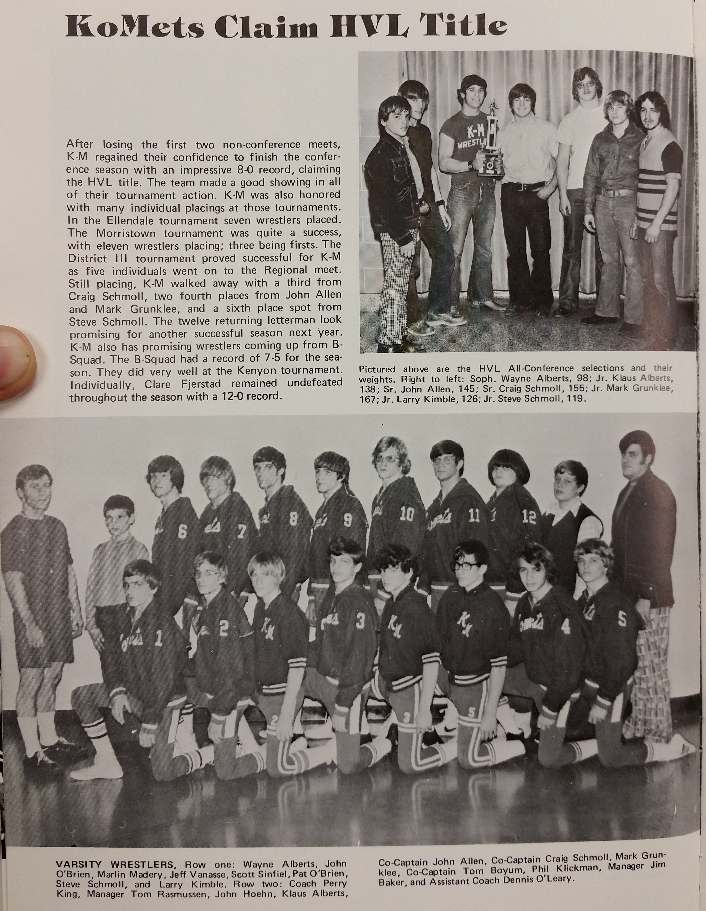

Season
1974-75
10-2Dual record
90Wrestlers
Perry KingHead coach

Roster
| Wt | Wrestler | Grade | Record | State |
|---|---|---|---|---|
| Nov. | 22nd Pine Island | L | 32-29 | |
| Dec. | 3rd Hayfield | L | 27-24 | |
| Dec. | 10th Dodge Center | W | 37-24 | |
| Dec. | 13th Lake City | W | 42-15 | |
| Dec. | 20th Byron | W | 26-24 | |
| Jan. | 14th Kenyon | W | 27-23 | |
| Jan. | 17th St. Charles | W | 38-17 | |
| Jan. | 21st Cannon Falls | W | 45-8 | |
| Jan. | 24th Stewartville | W | 24-19 | |
| Jan. | 28th Wabasha-Kellogg | W | 45-15 | |
| Jan. | 31st Plainview | W | 29-20 | |
| Feb. | 3rd Zumbrota | W | 36-23 | |
| 98# | Wayne Alberts | 10th | 17-5 | |
| 105# | John O'Brien | 10th | 6-11 | |
| 105# | Marlin Madery | 8th | 2-5 | |
| 112# | Jeff Vanasse | 9th | 4-7 | |
| 119# | Steve Schmoll | 11th | 16-11 | |
| 119# | Pat O'Brien | 11th | 3-5 | |
| 126# | Larry Kimble | 11th | 12-3 | |
| 132# | John Hoehn | 11th | 13-4 | |
| 138# | Klaus Alberts | 11th | 23-3 | |
| 145# | John Allen | 12th | 20-5 | |
| 145# | Jim Heiserman | 11th | 8-7 | |
| 155# | Craig Schmoll | 12th | 27-5 | |
| 167# | Mark Grunklee | 11th | 23-8 | |
| 180# | Tom Boyum | 12th | 6-9 | |
| Hwt. | Phil Klickman | 11th | 0-19 | |
| 98# | Wayne Alberts | 10th | 9-2 | |
| 105# | John O'Brien | 10th | 3-4 | |
| 112# | Jeff Vanasse | 9th | 2-6 | |
| 119# | Steve Schmoll | 11th | 8-2 | |
| 119# | Pat O'Brien | 11th | 1-4 | |
| 126# | Larry Kimble | 11th | 8-1 | |
| 132# | John Hoehn | 11th | 9-1 | |
| 138# | Klaus Alberts | 11th | 11-0 | |
| 145# | John Allen | 12th | 9-1 | |
| 145# | Jim Heiserman | 11th | 3-4 | |
| 155# | Craig Schmoll | 12th | 9-2 | |
| 167# | Mark Grunklee | 11th | 9-3 | |
| 180# | Tom Boyum | 12th | 2-4 | |
| Hwt. | Phil Klickman | 11th | 0-12 | |
| Alt. | Marlin Madery | 8th | 2-3 | |
| 98# | Wayne Alberts | 10th | 2-1 | |
| 119# | Pat O'Brien | 11th | 2-1 | |
| 132# | John Hoehn | 11th | 2-1 | |
| 138# | Klaus Alberts | 11th | 3-0 | |
| 145# | Jim Heiserman | 11th | 2-1 | |
| 155# | Craig Schmoll | 12th | 3-0 | |
| 167# | Mark Grunklee | 11th | 2-1 | |
| Hwt. | Phil Klickman | 11th | 0-2 | |
| 98# | Wayne Alberts | 10th | 2-0 | |
| 105# | John O'Brien | 10th | 1-2 | |
| 112# | Jeff Vanasse | 9th | 2-1 | |
| 119# | Steve Schmoll | 11th | 2-1 | |
| 126# | Larry Kimble | 11th | 2-1 | |
| 132# | John Hoehn | 11th | 2-1 | |
| 138# | Klaus Alberts | 11th | 3-0 | |
| 145# | John Allen | 12th | 2-1 | |
| 155# | Craig Schmoll | 12th | 3-0 | |
| 167# | Mark Grunklee | 11th | 3-0 | |
| 180# | Tom Boyum | 12th | 2-1 | |
| Hwt. | Phil Klickman | 11th | 0-2 | |
| 98# | Wayne Alberts | 10th | 2-1 | |
| 105# | John O'Brien | 10th | 1-3 | |
| 119# | Steve Schmoll | 11th | 1-2 | |
| 126# | Larry Kimble | 11th | 3-0 | |
| 132# | Klaus Alberts | 11th | 3-0 | |
| 138# | John Allen | 12th | 2-1 | |
| 145# | Craig Schmoll | 12th | 3-1 | |
| 155# | Jim Heiserman | 11th | 2-2 | |
| 167# | Tom Boyum | 12th | 2-2 | |
| 180# | Mark Grunklee | 11th | 2-1 | |
| Hwt. | Phil Klickman | 11th | 0-2 | |
| 98# | Wayne Alberts | 10th | 2-2 | |
| 105# | John O'Brien | 10th | 0-1 | |
| 112# | Scott Singfield | 11th | 0-1 | |
| 119# | Steve Schmoll | 11th | 3-2 | |
| 126# | Larry Kimble | 11th | 0-1 | |
| 132# | John Hoehn | 11th | 0-1 | |
| 138# | Klaus Alberts | 11th | 3-1 | |
| 145# | John Allen | 12th | 4-1 | |
| 155# | Craig Schmoll | 12th | 4-1 | |
| 167# | Mark Grunklee | 11th | 4-1 | |
| 180# | Tom Boyum | 12th | 0-1 | |
| Hwt. | Phil Klickman | 11th | 0-1 | |
| 119# | Steve Schmoll | 11th | 2-3 | |
| 138# | Klaus Alberts | 11th | 0-2 | |
| 145# | John Allen | 12th | 3-1 | |
| 155# | Craig Schmoll | 12th | 5-1 | |
| 167# | Mark Grunklee | 11th | 3-2 |
Team Results
10-2 · Click to expand
- Nov. 22ndPine IslandL32-29
- Dec. 3rdHayfieldL27-24
- Dec. 10thDodge CenterW37-24
- Dec. 13thLake CityW42-15
- Dec. 20thByronW26-24
- Jan. 14thKenyonW27-23
- Jan. 17thSt. CharlesW38-17
- Jan. 21stCannon FallsW45-8
- Jan. 24thStewartvilleW24-19
- Jan. 28thWabasha-KelloggW45-15
- Jan. 31stPlainviewW29-20
- Feb. 3rdZumbrotaW36-23
Head coachPerry King